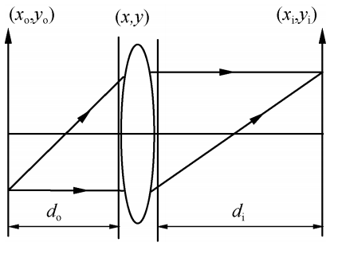

光学成像系统的传递函数
引言
光学成像系统是信息传递系统.
从物面到像面，输出图像的质量完全取决于光学系统的传递特性.
几何光学是在空域研究光学系统的成像规律.
评价成像质量的方法
- 星点法：检验点光源经过光学系统所产生的像斑，由于像差、玻璃材料不均匀性及加工和装配缺陷等，使像斑不规则，很难对其做出定量计算与测量，检验着的主观判断将带入检验结果中.
- 分辨率法：虽能定量评价系统分辨景物细节的能力，但并不能对可分辨范围内的像质好坏给予全面评价.
与空域分析相平行，还可以在频域中分析光学系统的成像质量.
光学系统是线性系统，且在一定条件下还是线性空不变系统，因而可以利用线性系统理论来研究它的性能.
将输入信息分解成各种空间频率分量，然后考察这些空间频率分量在通过系统的传递过程中，丢失、衰减、相位移动等变化，也就是研究系统的空间频率传递特性，即传递函数.
这显然是一种全面评价光学系统成像质量的方法.
传递函数可由光学系统的设计数据计算得出.
虽然计算传递函数的步骤比较麻烦，检查传递函数的仪器也比较复杂，但是，大容量高速度电子计算机的出现及高精度光电测试技术的发展，使光学传递函数的计算和测量日趋完善，并逐渐得到实际应用.
一般成像系统
成像系统的普适模型
任何平面物场分布都可以看作为无数小面元的组合，而每个小面元都可看作一个加权的\(\delta\)函数.
系统对光束大小的限制是由系统的孔径光阑决定的，即在考虑了衍射受限系统时，实际上主要是考察孔径光阑的衍射作用.
当轴上物点的位置确定后，孔径光阑、入瞳、出瞳由系统元件参数及相对位置决定.
对整个光学系统而言，入瞳与出瞳保持物像共轭关系.
由入瞳限制的物方光束必定能全部通过系统，成为被出瞳限制的像方光束.
下面为这样的系统建立一个普适模型：
 成像系统的普通模型
成像系统的普通模型
如图所示，任意成像系统都可以分成三部分：
- 第一部分：从物平面到入瞳平面（光波传播可按Fresnel衍射处理）
- 第二部分：从入瞳平面到出瞳平面
- 第三部分：从出瞳平面到像平面（光波的传播可按Fresnel衍射处理）
对于第二部分的透镜系统，在等晕条件下，可将其作为一个黑箱处理，黑箱两个边端分别是入瞳与出瞳.
只要能确定这个黑箱两个边端的性质，整个透镜组的性质便可确定下来，而不必深究其内部结构.
假定在入瞳与出瞳之间的光的传播可用几何光学来描述，所谓边端性质是指成像光波在入瞳与出瞳平面上的性质.
为了确定系统的脉冲响应，需要知道这个黑箱对点光源发出的球面波的变换作用，即当入瞳平面上输入发散球面波时，出瞳平面透射的波场特性.
对于实际光组，这一边端性质千差万别，但总可以分为两类：
衍射受限系统的边端条件
当像差很小或系统的孔径与视场都不大时，实际光学系统就可近似看作衍射受限系统.
此时的边端性质就比较简单，物面上任一点光源发出的发散球面波投射到入瞳上，被光组变换为出瞳上的会聚球面波.
衍射受限系统
不考虑几何像差，仅考虑系统的衍射限制.
若忽略衍射效应，点物通过系统后将形成一个理想的点像.
一般的衍射受限系统可由若干共轴球面透镜组成，这些透镜既可以是正透镜，也可以是负透镜，且透镜也不一定是薄的.
有像差系统的边端条件
有像差系统的边端条件为：点光源发出的发散球面波投射到入瞳上，出瞳处的透射波场明显偏离理想球面波，偏离程度由波像差决定.
补充知识
阿贝认为衍射效应是由于有限大小的入瞳引起的.
1896年瑞利提出衍射效应来自有限大小的出瞳.
由于一个光曈不过是另一个光曈的几何像，这两种看法是等效的，衍射效应可以归结为：入瞳或出瞳对成像光波的限制.
这里采用瑞利的说法.
点扩散函数
点扩散函数（脉冲响应）\(h(x_o, y_o; x_i, y_i)\)
物面面元的光振动为单位脉冲（即\(\delta\)函数）时的像场分布函数.
常用\(h(x_o, y_o; x_i, y_i)\)表示，表示物平面上\((x_o, y_o)\)点的单位脉冲通过成像系统后在像平面\((x_i, y_i)\)点产生的光场分布.
一般来说，\(h(x_o, y_o; x_i, y_i)\)既是\(x_o, y_o\)的函数，也是\(x_i, y_i\)的函数.
相干照明衍射受限系统的点扩散函数
对于一个透镜或一个成像系统，若能够清楚知道物平面上任一小面元的光振动通过成像系统后，在像平面上所造成的光振动分布情况，通过线性叠加，原则上便能求得任何物面光场分布通过系统后所形成的像面光场分布，进而求得像面强度分布.
这就是相干照明下的成像过程，关键是求出任意小面元的光振动所对应的像场分布.
透镜的点扩散函数
研究在相干照明下，一个消像差的正薄透镜对透明物成实像的情况.

如图所示：物体放在透镜前距离为\(d_o\)的输入平面\(x_oy_o\)上，在透镜后距离\(d_i\)的共轭面\(x_iy_i\)上观察成像情况.
[设]紧靠物体后的复振幅分布为：\(U_o(x_o', y_o')\).
[设]\((x_o', y_o')\)点处发出的单位脉冲为\(\delta(x_o-x_o', y_o-y_o')\).
沿光波传播方向，逐面计算三个特定平面上的场分布：
- 紧靠透镜前的平面上的场分布\(\mathrm{d}U_1\)
- 紧靠透镜后的平面上的场分布\(\mathrm{d}U_1'\)
- 观察平面上的场分布\(h\)
这样就可最终导出一个点源的输入输出关系.
物平面\(\to\)透镜前表面
利用Fresnel衍射公式，有：
$$\begin{align}
\mathrm{d}U_1(x_o',y_o';x,y) &= \frac{\exp(ikd_o)}{i\lambda d_o}\iint_{-\infty}^{+\infty}\delta(x_o-x_o', y_o-y_o')\exp\left[ik\frac{(x-x_o)^2 + (y-y_o)^2}{2d_o}\right]\mathrm{d}x_o\mathrm{d}y_o\\
&= \frac{\exp(ikd_o)}{i\lambda d_o}\exp\left[ik\frac{(x-x_o')^2 + (y-y_o')^2}{2d_o}\right]
\end{align}$$
由于\((x_o', y_o')\)是任意的，为书写方便，略去常数相位因子后，上式可写为：
$$\mathrm{d}U_1(x_o, y_o; x, y) = \frac{1}{i\lambda d_o}\exp\left[ik\frac{(x-x_o)^2 + (y-y_o)^2}{2d_o}\right]$$
\(x_oy_o\)平面与\(x_o'y_o'\)平面在物理上其实是同一个平面，但是为了在数学上区分开，采取两个不同的符号.
这里求的是点扩散函数，即系统对单位脉冲的响应，因此不加\(U_0\).
$$U_0(x_o, y_o) = \delta(x_o-x_o', y_o-y_o')$$
透镜前表面\(\to\)透镜后表面
此波通过孔径函数\(P(x,y)\)，焦距为\(f\)的透镜后，复振幅\(\mathrm{d}U_1'(x_o, y_o;x, y)\)为：
$$\mathrm{d}U_1'(x_o, y_o;x,y) = P(x,y)\exp\left(-ik\frac{x^2 + y^2}{2f}\right)\mathrm{d}U_1(x_o, y_o; x, y)$$
- \(P(x,y)\exp\left(-ik\frac{x^2 + y^2}{2f}\right)\)：透镜的相位变换因子
透镜后表面\(\to\)观察面
由于透镜后表面到观察面，光场的传播满足Fresnel衍射，于是物平面上的单位脉冲在观察面上引起的复振幅分布（即点扩散函数）可写为：
对点扩散函数的进一步简化
积分前的相位因子\(\exp\left[ik\frac{x_i^2 + y_i^2}{2d_i}\right]\)不影响最终探测的强度分布，可以略去.
\(\exp\left[ik\frac{x_o^2 + y_o^2}{2d_o}\right]\)在求物面上各点对像面光场的贡献时，需要参与积分，不可略去.
当透镜的孔径较大时，物面上每一物点产生的脉冲响应为一很小的像斑，那么对应于像面上\((x_i, y_i)\)点光场产生有意义贡献的，必定为物面上与几何成像对应的、以物点为中心的微小区域.
“很小的像斑”可以近似为一个点；
衍射理论告诉我们，孔径越大，衍射越不明显，光斑越集中.
这句话其实是在说，像面上的一个亮点可以与物面上的一个点“一一对应”，即共轭；因为其他位置的光场贡献可以忽略（离得“太远”）.
在此区域内，近似认为\(x_o,~y_o\)不变，其值与\(x_i,~y_i\)点的共轭物坐标\(x_o \approx x_i/M,~y_o \approx y_i/M\)相同，即作以下近似：
$$\exp\left[{i\frac{k}{2d_o}(x_o^2 + y_o^2)}\right]\approx \exp\left[{i\frac{k}{2d_o}\left(\frac{x_i^2 + y_i^2}{M^2}\right)}\right]$$
- \(M = -d_i/d_o\)：成像透镜的横向放大率
通过近似后的相位因子不再依赖于\((x_o, y_o)\)，因此不会影响\(x_iy_i\)面上的强度分布，于是可以略去，则：
注意：
$$x_i \approx x_oM,\quad \tilde{x}_o = x_oM$$
\(x_i\)表示的是实际像，而\(\tilde{x}_o\)表示的是理想像.
该式表明：在近轴成像条件下，上式所表征的透镜成像系统是空不变的.
$$\because \tilde{x}_o = x_oM$$
当物点平移\((\Delta x, \Delta y)\)时，点扩散函数移动\((M\Delta x, M\Delta y)\)，即具有空不变性.
而且，透镜的脉冲响应就等于透镜孔径的Fraunhofer衍射图样，其中心位于理想像点\((\tilde{x}_o, \tilde{y}_o)\)处.
透镜孔径的衍射作用明显与否，由孔径线度相对于波长\(\lambda\)和像距\(d_i\)的比例决定的，为此对孔径平面上的坐标\(x,y\)做如下变换：
[令]
$$\tilde{x} = \frac{x}{\lambda d_i},\quad \tilde{y} = \frac{y}{\lambda d_i}$$
这就是透镜的点扩散函数表达式.
当孔径大小比\(\lambda_i d\)大得多时，在\(\tilde{x},~\tilde{y}\)坐标中，在无限大的区域内\(P(\lambda d_i\tilde{x}, \lambda d_i\tilde{y})\equiv 1\).
$$\begin{align}\therefore
h(x_i - \tilde{x}_o, y_i-\tilde{y}_o) &= |M|\iint_{-\infty}^{+\infty}P(\lambda d_i\tilde{x}, \lambda d_i\tilde{y})\exp\left[-i2\pi\left((x_i - \tilde{x}_o)\tilde{x} + (y_i - \tilde{y}_o)\tilde{y}\right)\right]\mathrm{d}\tilde{x}\mathrm{d}\tilde{y}\\
&= |M|\delta(x_i - \tilde{x}_o, y_i-\tilde{y}_o)
\end{align}$$
此时物点成像为一个像点，即为理想成像.
衍射受限系统的点扩散函数
考虑成像系统的普适模型：
由物点出发的球面波，在像方得到的将是一个被出射光曈限制的球面波，整个球面波是以理想像点为中心的.
由于出瞳的限制作用，在像平面上将产生以理想像点为中心的出瞳孔径的Fraunhofer衍射图样，于是可以写出物面上以\(x_o, y_o\)点的单位脉冲，通过衍射受限系统后，在与物面共轭的像面上的复振幅分布，即点扩散函数为：
$$h(x_o, y_o; x_i, y_i) = K\iint_{-\infty}^{+\infty}P(x,y)\exp\left\{-i\frac{2\pi}{\lambda d_i}[(x_i-Mx_o)x + (y_i-My_o)y]\right\}\mathrm{d}x\mathrm{d}y$$
- \(K\)：与\(x_o,~y_o,~x_i,~y_i\)无关的复常数
- \(P(x,y)\)：出瞳函数（光曈函数），光曈内其值为\(1\)，光曈外其值为\(0\)
- \(d_i\)：光曈面到像面的距离，已不是通常意义下的像距
需要说明的是：推导上式时，同样略去了关于\(x_i,y_i\)和\(x_o, y_o\)的二次相位因子，上式与式一样，是有条件的.
上式表明：若略去积分号前的系统，脉冲响应就是光曈函数的Fourier变换你换，即衍射首先系统的脉冲响应是光学系统出瞳的Fraunhofer衍射图样，其中心在几何光学的理想像点\(Mx_o, My_o\)处.
同样对物平面上的坐标\(x_o, y_o\)与光曈平面上的坐标\(x,y\)做坐标变换.
[令]
$$\tilde{x}_o = Mx_o,\quad \tilde{y}_o = My_o$$
$$\tilde{x} = \frac{x}{\lambda d_i},\quad \tilde{y} = \frac{y}{\lambda d_i}$$
几何光学理想成像情况
若光曈相对\(\lambda d_i\)足够大，在\(\tilde{x}, \tilde{y}\)坐标中，在无限大区域内\(P(\lambda d_i\tilde{x}, \lambda d_i\tilde{y})\equiv 1\)，则：
理想成像的脉冲响应
$$h(x_i - \tilde{x}_o, y_i - \tilde{y}_o) = K\lambda^2d_i^2\delta(x_i - \tilde{x}_o, y_i - \tilde{y}_o)$$
上式表明：当可以忽略光曈的衍射时，\(x_o, y_o\)点的脉冲通过衍射受限系统后在像面上得到的仍为点脉冲，其位置为\(x_i = \tilde{x}_o = Mx_o,~ y_i = \tilde{y}_o = My_o\).
衍射受限系统的相干传递函数
在相干照明下的衍射受限系统，对复振幅的传递是线性空不变的.
相干传递函数
$$U_i(x_i, y_i) = \iint_{-\infty}^{+\infty}U_g(\tilde{x}_o, \tilde{y}_o)\tilde{h}(x_i - \tilde{x}_o, y_i - \tilde{y}_o)\mathrm{d}\tilde{x}_o\mathrm{d}\tilde{y}_o$$
定义系统的输入频谱\(G_{ge}(\xi, \eta)\)与输出频谱\(G_{ie}(\xi, \eta)\)分别为：
$$G_{ge}(\xi, \eta) = \mathcal{F}\{U_g(\tilde{x}_o, \tilde{y}_o)\}$$
$$G_{ie}(\xi, \eta) = \mathcal{F}\{U_i(x_i, y_i)\}$$
相干传递函数（CTF）为：
$$H(\xi, \eta) = \mathcal{F}\{\tilde{h}(x_i, y_i)\}$$
\(G_{ge}\)是理想像的频谱，而非物的频谱\(G_{oe}\)
CTF也称为频谱函数
$$G_{ge}(\xi, \eta) = G_{oe}(M\xi, M\eta)$$
$$\tilde{x} \overset{\mathcal{F}}{\to}x_i\overset{\mathcal{F}}{\to}\xi$$
$$\begin{align}
\boldsymbol{H}(\xi, \eta) &= \mathcal{F}\{\tilde{h}(x_i, y_i)\}\\
&= \mathcal{F}\{\mathcal{F}[P(\lambda d_i\tilde{x}, \lambda d_i\tilde{y})]\}\\
&= P(-\lambda d_i\xi, -\lambda d_i\eta)
\end{align}$$
上式指出：相干传递函数\(H(\xi, \eta)\)等于光曈函数，仅在空域坐标\(x,~y\)与频域坐标\(\xi,~\eta\)间存在一定的坐标缩放关系.
光曈函数总是取\(0\)和\(1\)两个值，所以相干传递也是如此.
衍射受限系统是一个低通滤波器，低于某一频率的指数基元成分将按原样通过，高于该频率的指数基元成分将被截止.
这个特征频率称为系统的截止频率，用\(\rho_c\)表示.
为什么P的自变量变了，还是光曈函数？
什么叫指数基元成分？
若不考虑孔径的有限大小，认为\(P\equiv 1\)，则整个频谱面上有\(H(\xi, \eta) = 1\).
此时像是物的准确复现，没有任何信息丢失，认为是几何光学理想成像情况.
若在一个反演坐标中定义\(P\)，则可以去掉负号的累赘，即：
$$H(\xi, \eta) = P(\lambda d_i\xi, \lambda d_i\eta)$$
由于一般光曈函数都是对光轴呈中心对称的，这样的处理通常结果不会产生任何实质性的影响.
一个直径为\(D\)的圆形光曈，其孔径函数\(P(x,y)\)可表示为：
$$P(x,y) = \text{circ}\left(\frac{\sqrt{x^2 + y^2}}{D/2}\right)$$
相干传递函数为：
$$\begin{align}
H(\xi, \eta) &= P(\lambda d_i\xi, \lambda d_i\eta)\\
&= \text{circ}\left(\frac{\sqrt{(\lambda d_i\xi)^2 + (\lambda d_i\eta)^2}}{D/2}\right)\\
&= \text{circ}\left(\frac{\sqrt{\xi^2 + \eta^2}}{D/2\lambda d_i}\right)
\end{align}$$
由圆柱函数的定义可知：\(D/2\lambda d_i\)区域内，\(H(\xi, \eta) = 1\)；\(D/2\lambda d_i\)区域外，\(H(\xi, \eta) = 0\).
故截止频率为：
$$\rho_c = \frac{D}{2\lambda d_i}$$
由于是圆形光曈，任何方向上的截止频率是相同的.
[注]此处的\(\rho_c\)为像面上的截止频率，物面上的截止频率为\(\rho_{oc} = |M|\rho_c\).
若出瞳是边长为\(a\)的正方向，则光曈函数为：
$$P(x,y) = \text{rect}\left(\frac{x}{a}\right)\text{rect}\left(\frac{y}{a}\right)$$
相干传递函数为：
$$\begin{align}
H(\xi, \eta) &= P(\lambda d_i\xi, \lambda d_i\eta)\\
&= \text{rect}\left(\frac{\lambda d_i\xi}{a}\right)\text{rect}\left(\frac{\lambda d_i\eta}{a}\right)\\
&= \text{rect}\left(\frac{\xi}{a/\lambda d_i}\right)\text{rect}\left(\frac{\eta}{a/\lambda d_i}\right)
\end{align}$$
相干线扩散函数与边缘扩散函数
测量传递函数的方法
方法1
计算或测量出系统的点扩散函数，然后对其作Fourier变换以确定传递函数.
评价
在一些情况中，得不到点扩散函数的精确表达式，这种方法不好使用.
方法2
将大量频率不同的本征函数逐个输入系统，并确定每个本征函数收到的衰减及其相移，从而得到传递函数.
评价
这种方法较方法1更为直接，但测量数目较大，有时实现起来相当困难.
方法3
由线扩散函数确定传递函数.
线扩散函数与边缘扩散函数的概念
对于相干照明成像系统：点物在像面上的响应（即点扩散函数）为一种复振幅分布，所有点物响应的叠加即得像面上的复振幅分布，这个分布的绝对值的平方记为像面强度的分布.
对于非相干照明成像系统：点物在像面上的响应（即强度点扩散函数）为一种强度分布，所有这些强度点扩散函数的叠加得到像面强度分布.
无论是复振幅点扩散函数还是强度点扩散函数，就叠加成线扩散函数的方式都是一样的.
直观起见，下面以点物的强度响应为例讨论点扩散函数与线扩散函数的关系；但公式中的各函数表达式既可以理解为强度，也可以理解为复振幅.
一个点物在像面上造成的强度分布即为点扩散函数\(h(x_i, y_i)\)，\(x_i, y_i\)是像面上的位置坐标.
校正好中心的镜头，其轴上物点的像是圆对称的.
如图(a)所示就是这样的像点，图上画出的是点扩散函数的轮廓形状，强度变化没有表示出来，但强度分布对像斑中心\(O\)呈圆对称.
因此过中心的一条狭缝，无论方向如何，例如图(a)虚线所示，从缝中看到的强度分布，以离\(O\)点远近表示，分布状况都是一样的.
通常以沿\(x_i\)轴的狭缝的强度分布曲线\(h(x_i)\)作为点扩散函数，如图(b)所示.
一个亮狭缝通过光学系统成像后，光强分布依然是往两侧散开的，散开的情况取决于光学系统的点扩散函数.
因为一根亮直线或一个亮狭缝，可以看成是由许多亮点的集合组成的，这许多沿直线排列的点源的像点的叠加，就构成亮直线的光强度分布.
若我们将直线像的长度方向取为\(y_i\)方向，那么沿\(x_i\)方向的光强分布\(L(x_i)\)就叫线扩散函数.
线扩散函数其实就是“像面上”沿亮直线宽度方向的强度分布.
要区分物面上的“狭缝宽度”与像面上的“像”.
图(b)同样可以代表亮直线的成像情况，这就是实际成像的强度分布，也就是线扩散函数.
 点扩散函数的分布
点扩散函数的分布
应当注意，这里只是说它们的表示方式相同，而点扩散函数的曲线形状与线扩散函数的曲线形状是不一样的.
线扩散函数由点扩散函数叠加而成，这就是两者之间的关系.
下面用数学式子将这个关系表达出来：
[设]系统输入一线脉冲，例如平行于\(y_o\)轴的线光源\(U_o(x_o, y_o) = \delta(x_o)\).
\(\delta(x_o)\)其实甚至是直接与\(y_o\)轴重合的.
前置知识
线性空不变系统的线扩散函数为：
$$\begin{align}
L(x_i) &= \delta(x_o)*h(x_i, y_i)\\
&= \iint_{-\infty}^{+\infty}\delta(\alpha)h(x_i - \alpha, \beta)\mathrm{d}\alpha\mathrm{d}\beta\\
&= \int_{-\infty}^{+\infty}h(x_i, \beta)\mathrm{d}\beta
\end{align}$$
上式表明：线扩散函数仅依赖于\(x_i\)，它等于点扩散函数沿\(y_i\)方向的线积分.
物为一狭缝，它在像面上造成的分布就是线扩散函数.
现用一与狭缝方向平行的刀片放置在像面上，开始时刀片完全挡住狭缝像；刀片逐渐移动，也就逐渐放入狭缝像的光.
 由线扩散函数产生边缘扩散函数
由线扩散函数产生边缘扩散函数
有像差系统的传递函数
对于衍射受限系统，在相干照明下传递函数\(H\)只有\(0\)和\(1\)两个值，各种空间成分或者无畸变地通过系统，或者被完全挡掉.
在非相干照明下的光学传递函数\(H\)是非负实函数，即系统只改变各频率成分的对比，不产生相移.
以上结果是无像差的理想情况下得出的.
任何一个实际系统总是有像差的.
像差来源
- 构成系统的元件
- 成像平面的位置误差
- 理想球面透镜所固有的如球面像差等
所有这些像差都会对传递函数产生影响，在相干或非相干照明下，往往都是复函数.
系统将对各频率成分的相位产生影响.
在讨论衍射受限系统时，我们通过点扩散函数\(\tilde{h}(x_i, y_i)\)与光曈函数的Fourier变换，最终用光曈函数来描述传递函数.
对于有像差的系统，仍采用这种方法，只是对光曈函数的概念加以推广，然后用广义光曈函数来描述这种有像差系统的传递函数.
衍射受限系统中，单位脉冲\(\delta(\tilde{x}_o, \tilde{y}_o)\)通过系统后透射到光曈上的，是以理想像点为中心的球面波.
对于有像差的系统，不论产生像差的原因如何，其效果都是使光曈上的初设波前偏离理想球面，如图所示.
 像差对出瞳平面波前的影响
像差对出瞳平面波前的影响
由于系统有像差，使与O点等相位的各点形成波面\(\Sigma_1\)；若系统无像差，理想波面应该使\(\Sigma_0\).
\(\Sigma_1\)和\(\Sigma_0\)每一点的光程差用函数\(W(x,y)\)表示，其具体形式由系统像差决定，由其引起的相位变化为\(kW(x,y)\).
若定义：
广义光曈函数\(\mathcal{P}(x,y)\)
$$\mathcal{P}(x,y) = P(x,y)e^{ikW(x,y)}$$
- \(P(x,y)\)：系统没有像差时的光曈扩散函数
则\(\tilde{h}(x_i, y_i)\)可以看作：复振幅透过率为\(\mathcal{P}(x, y)\)的光曈被半径为\(d_i\)的球面波照明后得到的分布.
这样一来，\(\tilde{h}(x_i, y_i)\)就是广义光曈函数的Fourier变换.
$$\begin{align}
\tilde{h}(x_i, y_i) &= \mathcal{F}\{\mathcal{P}(\lambda d_i\tilde{x}, \lambda d_i\tilde{y})\}\\
&= \mathcal{F}\{P(\lambda d_i\tilde{x}, \lambda d_i\tilde{y})e^{ikW(\lambda d_i\xi, \lambda d_i\eta)}\}\\
\end{align}$$
$$\begin{align}
H(\xi, \eta) &= \mathcal{P}(\lambda d_i\xi, \lambda d_i\eta)\\
&= P(\lambda d_i\xi, \lambda d_i\eta)e^{ikW(\lambda d_i\xi, \lambda d_i\eta)}
\end{align}$$
利用施瓦兹不等式，不难证明：
$$|\mathcal{H}(\xi, \eta)|_{有像差} \leq |\mathcal{H}(\xi, \eta)|_{无像差}$$
因此像差会进一步降低成像质量.
施瓦兹不等式
$$\left\lvert\iint_{-\infty}^{+\infty}\varphi^*(\alpha, \beta)\Phi(\alpha, \beta)\mathrm{d}\alpha\mathrm{d}\beta\right\rvert^2 \leq \iint_{-\infty}^{+\infty}|\varphi^*(\alpha, \beta)|^2\mathrm{d}\alpha\mathrm{d}\beta\cdot\iint_{-\infty}^{+\infty}|\Phi(\alpha, \beta)|^2\mathrm{d}\alpha\mathrm{d}\beta$$
相干与非相干成像系统的比较
下面对相干与非相干成像做一些比较，通过这些比较虽然不能得出哪一种成像更好的全面性结论，但对两者之间的联系和某些基本差异的理解会更深入一些，并能根据一些具体情况判断选用哪种照明会更好.
截止频率
OTF的截止频率是CTF截止频率的两倍.
但这并不意味着非相干照明一定比相干照明好.
这是因为不同系统的截止频率是对不同物理量传递而言的.
对于非相干系统，它是指能够传递的强度呈余弦变化的最高频率.
对于相干系统，是指能够传递复振幅呈周期变化的最高频率.
显然，从数值上对二者做简单比较是不合适的.
但对于二者的最后可观察量都是强度，因此直接对像强度进行比较是恰当的.
下面将会看到，即使比较的物理量一致，要判断绝对的好坏也是困难的.
像强度的频谱
两点分辨
分辨率是评判系统成像质量的一个重要指标.
非相干成像系统使用的是瑞利分辨判据，用其来表示理想光学系统的分辨率.
对于衍射受限的圆形光曈情况，点光源在像面上产生的衍射斑的强度分布称为艾里斑.
根据瑞利判据，对两个强度相等的非相干点源，若一个点源产生的艾里斑中心恰与第二个点源产生的艾里斑的第一个零点重合，则认为这两个点源刚好能够分辨.
瑞利分辨判据仅适用于非相干成像系统，对于相干成像系统是否能分辨两个点源，需要看它们的相位关系.